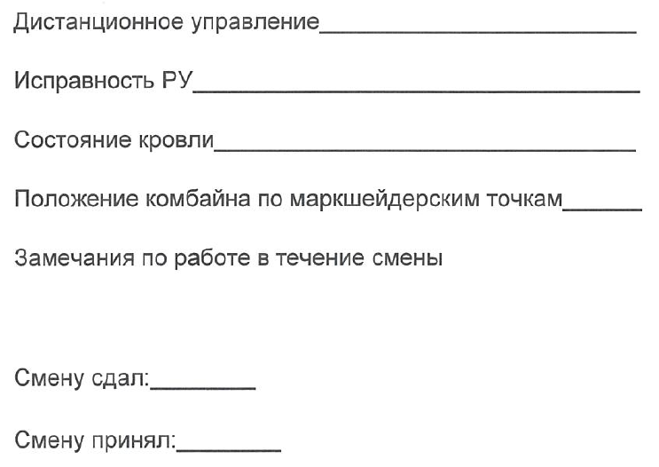

Вид работ
Тупиковый забой
Подрубка
Последние маркшейдерские точки
Устье камеры
Распор комбайна
Расстояние, м
При проходке тупиковым забоем расстояние измеряют от последних маркшейдерских точек до распора комбайна.
При подрубке расстояние измеряют от устья камеры до распора комбайна.
Журнал приёма и сдачи смен на комбайне
Запишите измеренное расстояние в метрах.
Положение комбайна по маркшейдерским точкам
Фрагмент оригинала
